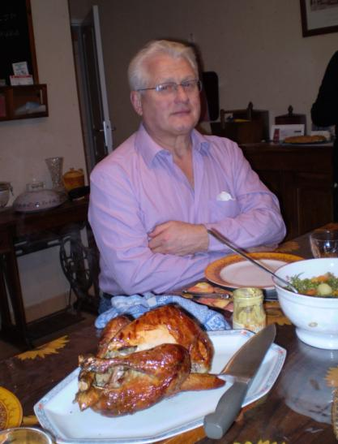

Recette n°177 : pintade heureuse à la broche

Ingrédients :
- une pintade heureuse (qui a gambadé en liberté en pays
gallo) de 1,5 kg environ
- une grosse cuiller d'huile d'olive dans une soucoupe avec le pinceau
pour oindre la volaille
Préparation :
- embrocher la pintade
- l'oindre d'huile
- mettre la broche au four et faire tourner
- mettre beaucoup d'eau dans le lèche-frites en bas du four
- régler le four à 275°C
- faire cuire au four entr'ouvert pendant 90 à 120 minutes,
suivant goût, en oignant d'huille de temps en temps
Observations :
recette préparée le 24 janvier 2008 à Rennes pour
Annie de Chevré, Christine et Michel de Bourges et nous deux ;
avec des petits pois et un Margaux 1997, c'était ma fois
très bon (la cuisson avait duré deux heures).